Synthesis for LPV systems
A primer on synthesis in the LPV framework.
Contents
LPV Synthesis
Problem Statement
Consider a parameter dependent linear plant 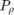 of the form:
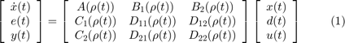
where 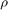 is a time varying parameter, that takes on values in a known compact set 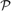 and has known bound on 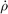, 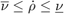. The time variations of 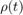 are not known in advance, but the parameter values are measured in real-time and available for control design.
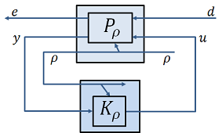
Figure 1: Closed-loop interconnection for LPV synthesis problem.
The control problem is to synthesize a controller 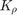 such that the closed-loop system shown in Figure 1, is stable and the gain from 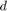 to 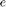 is minimized. This requires that the controller be designed such that the closed-loop performance is optimized in the presence of rate-bounded, time-varying parameter trajectories 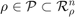. Denote the closed-loop system by 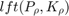, and the gain of this closed-loop system by Then the design objective can be stated as:
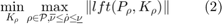
The resulting controller is itself parameter dependent - using the available real-time information of the parameter variation. In the grid-based LPV framework
LPVTools Implementation
LPVTools implements LPV controller synthesis for both the LFT-based LPV framework and the grid-based LPV framework. The synthesis functions generate controllers which optimize the performance of the closed-loop system while taking into account the permissible parameter trajectories: 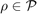, subject to .
In the grid-based LPV framework lpvsyn, lpvncfyn, lpvmixsyn, lpvloopshape, and lpvstochsyn are used to synthesize LPV output-feedback controllers. lpvsfsyn is used to synthesize LPV state-feedback controllers, and lpvestsyn is used to generate LPV estimators. These functions can be used to generate controllers and estimators to minimize either the induced 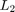 norm (based on results by Becker [1] and Wu [2,3], with pole-constrained synthesis based on the derivation by Lee [4]) or the stochastic LPV bound (based on results by Wu [2]). In the LFT-based LPV framework only lpvsyn is provided to synthesize LPV output-feedback controllers, and it implements an algorithm which minimizes the induced norm (based on results by Packard [5], and Apkarian and Gahinet [6]).
The LPV controller synthesis conditions lead to a set of Linear Matrix Inequalities (LMIs) which must be solved in order to generate a controller. These LMIs suffer from similar computational issues to the LPV analysis conditions, and their complexity also grows with 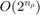.
References
- G. Becker, "Quadratic Stability and Performance of Linear Parameter Dependent Systems," Ph.D. Dissertation, University of California, Berkeley, 1993.
- F. Wu, "Control of Linear Parameter Varying Systems," PhD thesis, University of California, Berkeley, 1993.
- F. Wu, X. Yang, A. Packard, and G. Becker, "Induced L2 norm control for LPV systems with bounded parameter variation rates," International Journal of Nonlinear and Robust Control, vol. 6, pp. 983-998, 1996.
- L. H. Lee, "Identification and Robust Control of Linear Parameter-Varying Systems," Ph.D. Dissertation, University of California at Berkeley, 1997, doi:10.1.1.55.2269.
- A. Packard, "Gain scheduling via linear fractional transformations," Systems and Control Letters, vol. 22, no. 2, pp. 79-92, 1994.
- P. Apkarian and P.Gahinet, "A convex characterization of gain-scheduled Hinfinity controllers," IEEE Transactions on Automatic Control, vol. 40, no. 5, pp. 853-864, 1995.
LPV Synthesis Commands
LPVTools provides the following functions to design controllers for multiinput-multioutput (MIMO) LPV models:
| LPVSYN | Synthesize a LPV controller |
| LPVNCFSYN | Normalized coprime factor LPV controller synthesis |
| LPVLOOPSHAPE | LPV loop-shaping synthesis |
| LPVMIXSYN | LPV mixed-sensitivity synthesis |
| LPVSFSYN | Synthesize a LPV state-feedback controller |
| LPVESTSYN | Synthesize a LPV state estimator |
| LPVSTOCHSYN | Synthesize stochastic LPV controller |
| LPVSYNOPTIONS | Create options object for LPV synthesis and analysis |
Examples and How To
Concepts
LTI synthesis capabilities
Overloaded LTI synthesis function from the Control Systems Toolbox and the Robust Control Toolbox are provided for LPV systems. (e.g. lqr, hinfsyn, h2syn, loopsyn, ncfsyn, and mixsyn). These functions perform the controller synthesis pointwise in the parameter domain of the controller. In each case the resulting controller is not a LPV controller (i.e. one that satisfies the LPV analysis conditions), but a collection of LTI controllers - one for each point.